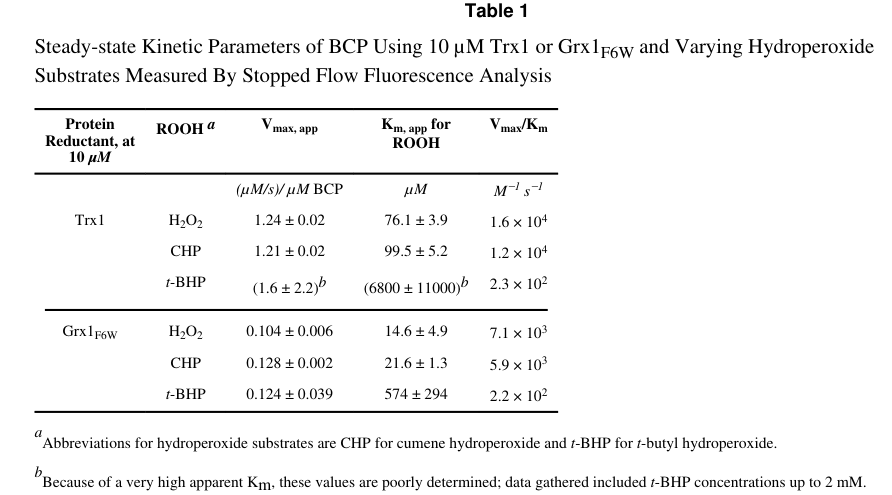

Bcp (bacterioferritin comigratory protein) is a monomeric peroxiredoxin of the BCP/PrxQ subfamily (EC 1.11.1.24) that catalyzes the thioredoxin-dependent reduction of hydrogen peroxide and organic hydroperoxides to water and the corresponding alcohols. It functions as an atypical 2-Cys peroxiredoxin: the peroxidatic cysteine Cys45 is oxidized to sulfenic acid by peroxide, then forms an intramolecular disulfide with the resolving cysteine Cys50, which is subsequently reduced by thioredoxin. Unlike the major E. coli peroxiredoxin AhpC, BCP is unusually versatile -- it can use multiple electron donors (Trx1, Trx2, Grx1, Grx3), has the highest redox potential (-146 mV) of any characterized peroxiredoxin, and shows broad peroxide substrate specificity. These properties suggest BCP may serve as a defense enzyme of last resort, remaining active under highly oxidizing conditions when other antioxidant systems are compromised. The bcp null mutant shows hypersensitivity to H2O2, tert-butyl hydroperoxide, and linoleic acid hydroperoxide, confirming its role in oxidative stress defense.
| GO Term | Evidence | Action | Reason |
|---|---|---|---|
|
GO:0008379
thioredoxin peroxidase activity
|
IBA
GO_REF:0000033 |
ACCEPT |
Summary: BCP has well-characterized thioredoxin-dependent peroxidase activity. The IBA annotation from phylogenetic inference is strongly supported by direct experimental evidence in the same organism (see IDA annotation below). BCP uses thioredoxin as a primary electron donor to reduce hydroperoxides.
Reason: Thioredoxin peroxidase activity is the core molecular function of BCP, demonstrated by Jeong et al. (2000) and characterized in detail by Reeves et al. (2011). The phylogenetic inference is correct and consistent with direct experimental data.
Supporting Evidence:
PMID:10644761
BCP showed a thioredoxin-dependent thiol peroxidase activity
PMID:21910476
thioredoxin (Trx1)-dependent peroxidase assays conducted by stopped-flow spectroscopy
file:ECOLI/bcp/bcp-deep-research-falcon.md
described as an unusually versatile bacterial peroxiredoxin
|
|
GO:0005737
cytoplasm
|
IBA
GO_REF:0000033 |
ACCEPT |
Summary: Cytoplasmic localization is correct for BCP. The protein lacks signal peptides and transmembrane domains and is a soluble monomeric enzyme. Two independent proteomics studies confirmed cytosolic localization. The broader cytoplasm annotation subsumes the more specific cytosol IDA annotations.
Reason: BCP is a soluble cytoplasmic enzyme. This is supported by two independent large-scale proteomics studies that identified BCP in the cytosolic fraction of E. coli K-12.
Supporting Evidence:
PMID:15911532
a proteomic analysis of Escherichia coli in which 3,199 protein forms were detected, and of those 2,160 were annotated and assigned to the cytosol, periplasm, inner membrane, and outer membrane
PMID:18304323
we identified 1103 proteins from the cytosolic fraction of the Escherichia coli strain MC4100
file:ECOLI/bcp/bcp-deep-research-falcon.md
BCP is best supported as a **cytosolic peroxide-detoxifying enzyme** integrated with NADPH-driven thioredoxin/glutaredoxin systems
|
|
GO:0034599
cellular response to oxidative stress
|
IBA
GO_REF:0000033 |
KEEP AS NON CORE |
Summary: BCP is involved in the cellular response to oxidative stress. The bcp null mutant shows hypersensitivity to multiple oxidants, and bcp expression is induced 3-fold upon shift from anaerobic to aerobic growth. However, GO:0034599 (cellular response to oxidative stress) implies a signaling or regulatory response component beyond simple detoxification. While UniProt states BCP acts "as sensor of hydrogen peroxide-mediated signaling events," the evidence for a signaling role in E. coli BCP is limited. The more straightforward annotation GO:0006979 (response to oxidative stress, IMP) is already present and better supported.
Reason: The annotation is not wrong but the more specific claim of "cellular response" (implying regulation/signaling) is less well-supported than the general oxidative stress response role. The IMP annotation to GO:0006979 below provides stronger direct evidence for the core oxidative stress defense function.
Supporting Evidence:
PMID:10644761
BCP was induced 3-fold by the oxidative stress given by changing the growth conditions from the anaerobic to aerobic culture
|
|
GO:0045454
cell redox homeostasis
|
IBA
GO_REF:0000033 |
KEEP AS NON CORE |
Summary: BCP participates in maintaining cellular redox balance through its peroxidase activity, cycling between reduced and oxidized states via the thioredoxin system. The unusually high redox potential (-146 mV) and ability to use multiple electron donors (Trx1, Trx2, Grx1, Grx3) suggest BCP integrates with the broader cellular redox network.
Reason: While BCP does cycle through the thioredoxin/glutaredoxin redox systems, its primary evolved function is peroxide detoxification rather than general redox homeostasis. This annotation is technically correct but secondary to the core peroxidase function.
Supporting Evidence:
PMID:21910476
BCP can utilize a variety of reducing substrates, including Trx1, Trx2, Grx1, and Grx3
PMID:21910476
BCP exhibited a high redox potential of -145.9 ± 3.2 mV, the highest to date observed for a Prx
file:ECOLI/bcp/bcp-deep-research-falcon.md
Bcp can also use Trx2 and glutaredoxins Grx1 and Grx3 as alternative reducing partners, indicating relaxed reductant specificity.
|
|
GO:0016209
antioxidant activity
|
IEA
GO_REF:0000002 |
KEEP AS NON CORE |
Summary: BCP is indeed an antioxidant enzyme that detoxifies reactive oxygen species. This IEA annotation from InterPro (IPR000866, AhpC/TSA domain) is correct but very general. The more specific annotations for thioredoxin peroxidase activity (GO:0008379) and thioredoxin-dependent peroxiredoxin activity (GO:0140824) provide better functional resolution.
Reason: Correct but too general. The specific peroxidase activity terms (GO:0008379, GO:0140824) are more informative for describing BCP function. Retained as a broad parent annotation from InterPro2GO.
|
|
GO:0016491
oxidoreductase activity
|
IEA
GO_REF:0000002 |
MARK AS OVER ANNOTATED |
Summary: BCP is an oxidoreductase (EC 1.11.1.24). This IEA annotation from InterPro is correct but extremely general. It is fully subsumed by the more specific thioredoxin peroxidase activity annotations. The falcon deep research confirms the precise activity (atypical 2-Cys peroxiredoxin reducing peroxides), making this grandparent term redundant for curation purposes.
Reason: Uninformatively broad grandparent term, fully subsumed by the specific molecular function annotations (GO:0008379, GO:0140824) that capture the experimentally characterized thioredoxin-dependent peroxidase reaction. This IEA term adds no curation value beyond the specific peroxidase terms.
Supporting Evidence:
file:ECOLI/bcp/bcp-deep-research-falcon.md
classification as an **atypical 2-Cys peroxiredoxin** with a **Cp–Cr** motif
|
|
GO:0098869
cellular oxidant detoxification
|
IEA
GO_REF:0000120 |
ACCEPT |
Summary: BCP detoxifies cellular oxidants (H2O2 and organic hydroperoxides) by reducing them to water and alcohols. This is a core biological process annotation that accurately describes BCP function. The combined IEA annotation derives from the molecular function annotations (GO:0008379, GO:0016209, GO:0140824).
Reason: Cellular oxidant detoxification is a core biological function of BCP. The bcp null mutant shows hypersensitivity to H2O2, t-butyl hydroperoxide, and linoleic acid hydroperoxide, directly demonstrating BCP detoxifies these oxidants.
Supporting Evidence:
PMID:10644761
Bcp null mutant grew more slowly than its wild type in aerobic culture and showed the hypersensitivity toward various oxidants such as H(2)O(2), t-butyl hydroperoxide, and linoleic acid hydroperoxide
|
|
GO:0140824
thioredoxin-dependent peroxiredoxin activity
|
IEA
GO_REF:0000120 |
ACCEPT |
Summary: GO:0140824 corresponds to EC 1.11.1.24 and represents the specific catalytic reaction: hydroperoxide + [thioredoxin]-dithiol = alcohol + [thioredoxin]-disulfide + H2O. This is the most precise molecular function term for BCP and directly matches the experimentally characterized activity.
Reason: This is the most specific and accurate MF term for BCP. EC 1.11.1.24 is assigned to BCP with experimental evidence (PMID:10644761, PMID:21910476). BCP uses the thioredoxin system as its primary electron donor, making this the correct EC-linked GO term.
Supporting Evidence:
PMID:10644761
BCP showed a thioredoxin-dependent thiol peroxidase activity
PMID:21910476
Kinetic and thermodynamic features reveal that Escherichia coli BCP is an unusually versatile peroxiredoxin
file:ECOLI/bcp/bcp-deep-research-bioreason-sft.md
domain logic directly yields the molecular functions formalized as GO:0008379 thioredoxin peroxidase activity
file:ECOLI/bcp/bcp-deep-research-falcon.md
classification as an **atypical 2-Cys peroxiredoxin** with a **Cp–Cr** motif
|
|
GO:0005829
cytosol
|
IDA
PMID:15911532 Localization, annotation, and comparison of the Escherichia ... |
ACCEPT |
Summary: Lopez-Campistrous et al. (2005) identified BCP in the cytosolic fraction of E. coli K-12 by 2D-gel electrophoresis and tandem mass spectrometry after biochemical fractionation. This is direct experimental evidence for cytosolic localization.
Reason: Direct identification of BCP in the cytosolic fraction by biochemical fractionation followed by 2D-gel/MS/MS. BCP lacks signal peptides and transmembrane domains, consistent with soluble cytosolic localization.
Supporting Evidence:
PMID:15911532
a proteomic analysis of Escherichia coli in which 3,199 protein forms were detected, and of those 2,160 were annotated and assigned to the cytosol, periplasm, inner membrane, and outer membrane
|
|
GO:0005829
cytosol
|
IDA
PMID:18304323 Protein abundance profiling of the Escherichia coli cytosol. |
ACCEPT |
Summary: Ishihama et al. (2008) independently identified BCP in the cytosolic fraction of E. coli MC4100 by LC-MS/MS. This provides independent confirmation of cytosolic localization from a second proteomics study.
Reason: Independent confirmation of cytosolic localization using LC-MS/MS on the cytosolic fraction. Consistent with the other IDA annotation from PMID:15911532 and with the absence of signal peptide or transmembrane domains.
Supporting Evidence:
PMID:18304323
we identified 1103 proteins from the cytosolic fraction of the Escherichia coli strain MC4100
|
|
GO:0006979
response to oxidative stress
|
IMP
PMID:10644761 Thioredoxin-dependent hydroperoxide peroxidase activity of b... |
ACCEPT |
Summary: The bcp null mutant showed clear hypersensitivity to oxidative stress: slower growth in aerobic culture and increased sensitivity to H2O2, t-butyl hydroperoxide, and linoleic acid hydroperoxide. BCP expression was induced 3-fold upon shift from anaerobic to aerobic conditions. Complementation with bcp gene restored resistance. This is strong IMP (mutant phenotype) evidence.
Reason: Strong mutant phenotype evidence. The bcp null mutant has clear oxidative stress hypersensitivity that is complemented by bcp expression, directly demonstrating BCP participates in the response to oxidative stress.
Supporting Evidence:
PMID:10644761
Bcp null mutant grew more slowly than its wild type in aerobic culture and showed the hypersensitivity toward various oxidants such as H(2)O(2), t-butyl hydroperoxide, and linoleic acid hydroperoxide
PMID:10644761
The peroxide hypersensitivity of the null mutant could be complemented by the expression of bcp gene
|
|
GO:0008379
thioredoxin peroxidase activity
|
IDA
PMID:10644761 Thioredoxin-dependent hydroperoxide peroxidase activity of b... |
ACCEPT |
Summary: Jeong et al. (2000) directly demonstrated thioredoxin-dependent peroxidase activity of purified recombinant BCP. BCP reduced H2O2, t-butyl hydroperoxide, and linoleic acid hydroperoxide using thioredoxin as electron donor. The C45S mutation abolished activity, confirming Cys-45 as the catalytic peroxidatic cysteine.
Reason: Direct biochemical demonstration of thioredoxin-dependent peroxidase activity using purified protein and multiple peroxide substrates. This is the primary IDA evidence establishing BCP as a thiol-specific peroxidase and the core molecular function of the protein.
Supporting Evidence:
PMID:10644761
BCP showed a thioredoxin-dependent thiol peroxidase activity
PMID:10644761
Replacement of Cys-45 with serine resulted in the complete loss of thiol peroxidase activity
|
Q: What are the relative contributions of BCP, AhpC, and Tpx to peroxide detoxification in E. coli under different stress conditions?
Suggested experts: Poole LB
Q: Does BCP have a signaling role in E. coli (as suggested by UniProt description of H2O2 sensor function), or is its role purely detoxification?
Suggested experts: Poole LB, Kim IH
Experiment: Compare peroxide sensitivity and survival of wild-type, bcp-null, ahpC-null, and bcp/ahpC double mutant E. coli under increasing concentrations of H2O2 and organic hydroperoxides. Measure the oxidation state of BCP and AhpC under progressive oxidative stress to determine if BCP remains active when AhpC is overoxidized.
Hypothesis: BCP serves as a "last resort" peroxidase under severe oxidative stress when AhpC is inactivated by overoxidation.
Type: genetic epistasis / redox proteomics
The architecture begins with a compact thioredoxin-like core: IPR036249 (Thioredoxin-like superfamily, residues 3–154) encompasses IPR013766 (Thioredoxin domain, residues 4–156), establishing the canonical β-sheet/α-helix fold that positions a nucleophilic cysteine for redox chemistry. Nested within this fold are peroxiredoxin-specific signatures: IPR024706 (Peroxiredoxin, AhpC-type family, residues 5–135) and IPR000866 (Alkyl hydroperoxide reductase subunit C / Thiol-specific antioxidant domain, residues 7–134) define the catalytic peroxidatic center and its resolving chemistry, while IPR050924 (Thiol-specific peroxidase BCP/PrxQ family, residues 3–155) specifies the BCP/PrxQ subclass that is optimized for hydrogen peroxide and organic hydroperoxide reduction. The ordered embedding of the AhpC-type core inside a thioredoxin-like scaffold causes a thiol-based peroxidase mechanism: the peroxidatic cysteine attacks H2O2 or ROOH to form a sulfenic intermediate that is then resolved via disulfide formation and reduction by thioredoxin.
This domain logic directly yields the molecular functions formalized as GO:0008379 thioredoxin peroxidase activity and GO:0032843 hydroperoxide reductase activity. The BCP/PrxQ family bias toward H2O2 and lipid/alkyl hydroperoxides explains the observed preference for H2O2 over organic hydroperoxides. The catalytic cycle requires electron input from thioredoxin, which is in turn reduced by thioredoxin reductase using NADPH, accounting for the observed NADPH dependence.
Detoxification of H2O2 and hydroperoxides is a primary defense against reactive oxygen species, placing the protein in GO:0006979 response to oxidative stress. By lowering peroxide levels, the enzyme preserves macromolecular integrity and supports redox homeostasis during aerobic metabolism and stress.
The absence of transmembrane segments and the soluble thioredoxin-like fold indicate a cytosolic enzyme. This aligns with a role in intercepting diffusible H2O2 and cytosolic lipid hydroperoxides, supporting localization to GO:0005829 cytosol.
Mechanistically, the peroxidatic cysteine cycles between reduced and sulfenylated states, forming an intramolecular or transient intermolecular disulfide that is resolved by thioredoxin. The enzyme likely operates within a broader redox network: it may receive electrons indirectly through the thioredoxin system that is also funneled to methionine sulfoxide reductase A and glutathione peroxidase, coordinating repair of oxidized proteins and membranes with peroxide removal. Functional coupling with alkyl hydroperoxide reductase complexes (AhpC/AhpF-type) would partition substrates, with this BCP/PrxQ enzyme specializing in H2O2 and certain organic hydroperoxides while Ahp systems handle lipid hydroperoxides more efficiently. Regulatory crosstalk with the accessory protein for GcvA suggests integration with acid-stress and redox-responsive transcriptional programs, ensuring peroxide detoxification is upregulated when oxidative load increases.
## Functional Summary
A cytosolic thiol-dependent peroxidase that uses a thioredoxin-like catalytic center to reduce hydrogen peroxide and certain organic hydroperoxides to water and the corresponding alcohols, with a preference for hydrogen peroxide. It draws electrons from NADPH via the thioredoxin/thioredoxin reductase system, thereby protecting the cell from oxidative damage and integrating with broader redox-repair pathways.
## UniProt Summary
Thiol-specific peroxidase that catalyzes the reduction of hydrogen peroxide and organic hydroperoxides to water and alcohols, respectively. Has a peroxidase activity towards H(2)O(2) and alkyl hydroperoxides, with a preference for H(2)O(2) over organic hydroperoxides. Acts as a hydrogen peroxide sensor. Required for protection against oxidative stress. Reduces H(2)O(2) in the presence of NADPH and thioredoxin reductase TrxB.
## InterPro Domains
- IPR036249: Thioredoxin-like superfamily (homologous_superfamily) [3-154]
- IPR050924: Thiol-specific peroxidase BCP/PrxQ (family) [3-155]
- IPR013766: Thioredoxin domain (domain) [4-156]
- IPR024706: Peroxiredoxin, AhpC-type (family) [5-135]
- IPR000866: Alkyl hydroperoxide reductase subunit C/ Thiol specific antioxidant (domain) [7-134]
## GO Term Predictions
### Molecular Function
### Biological Process
### Cellular Component
The research report should be a detailed narrative explaining the function, biological processes, and localization of the gene product. Citations should be given for all claims.
You should prioritize authoritative reviews and primary scientific literature when conducting research. You can supplement
this with annotations you find in gene/protein databases, but these can be outdated or inaccurate.
We are specifically interested in the primary function of the gene - for enzymes, what reaction is catalyzed, and what is the substrate specificity? For transporters, what is the substrate? For structural proteins or adapters, what is the broader structural role? For signaling molecules, what is the role in the pathway.
We are interested in where in or outside the cell the gene product carries out its function.
We are also interested in the signaling or biochemical pathways in which the gene functions. We are less interested in broad pleiotropic effects, except where these elucidate the precise role.
Include evidence where possible. We are interested in both experimental evidence as well as inference from structure, evolution, or bioinformatic analysis. Precise studies should be prioritized over high-throughput, where available.
The E. coli K-12 gene bcp encodes bacterioferritin comigratory protein (BCP), a peroxiredoxin in the BCP/PrxQ subfamily, functioning as a thioredoxin-dependent hydroperoxide peroxidase. This matches the UniProt entry P0AE52 description (peroxiredoxin Bcp; “thioredoxin peroxidase/thioredoxin-dependent peroxiredoxin”) and is supported directly by biochemical and kinetic studies on E. coli BCP. (jeong2000thioredoxindependenthydroperoxideperoxidase pages 3-4, reeves2011kineticandthermodynamic pages 2-4)
Peroxiredoxins are cysteine-dependent peroxidases that reduce H2O2 and organic hydroperoxides using thiol-based electron donors; bacterial BCP proteins belong to the peroxiredoxin family and can provide peroxide detoxification capacity complementary to catalases and other peroxidases. (reeves2011kineticthermodynamicand pages 103-110, jeong2000thioredoxindependenthydroperoxideperoxidase pages 2-3)
In “2-Cys” peroxiredoxins, a peroxidatic cysteine (Cp) is oxidized by peroxide to a sulfenic acid intermediate, then a resolving cysteine (Cr) forms a disulfide that is reduced back by cellular redox systems. For E. coli BCP, mass spectrometry and mutagenesis support classification as an atypical 2-Cys peroxiredoxin with a Cp–Cr motif. (reeves2011kineticthermodynamicand pages 36-41, reeves2011kineticandthermodynamic pages 2-4)
E. coli peroxide detoxification and redox homeostasis rely on NADPH-driven redoxins. BCP can be reduced by thioredoxins (Trx1/Trx2) and also shows activity with glutaredoxins (Grx1/Grx3), indicating relatively relaxed dependence on a single redox partner compared with some other Prxs. (reeves2011kineticthermodynamicand pages 103-110, reeves2011kineticthermodynamicand pages 41-47)
BCP catalyzes reduction of peroxides (H2O2 and organic hydroperoxides) in a thioredoxin-linked peroxidase system (Trx/TrxR/NADPH), monitored experimentally via NADPH oxidation and stopped-flow Trx fluorescence assays. (jeong2000thioredoxindependenthydroperoxideperoxidase pages 2-3, reeves2011kineticandthermodynamic pages 7-8)
Early kinetic measurements showed BCP reduces H2O2, t-butyl hydroperoxide, and linoleic acid hydroperoxide, with preference toward the lipid hydroperoxide among these tested substrates (lower Km and higher Vmax/Km for linoleic acid hydroperoxide). (reeves2011kineticthermodynamicand pages 36-41, jeong2000thioredoxindependenthydroperoxideperoxidase pages 3-4)
Later work emphasized broad peroxide specificity, reporting comparable rates for some peroxides (e.g., H2O2 and cumene hydroperoxide) under selected conditions, supporting the interpretation that E. coli BCP is an “unusually versatile peroxiredoxin.” (reeves2011kineticthermodynamicand pages 103-110, reeves2011kineticandthermodynamic pages 2-4)
E. coli BCP contains three cysteines (Cys-45, Cys-50, Cys-99); Cys-45 is the peroxidatic cysteine and is essential for activity (C45S mutant abolished Trx-dependent peroxidase/antioxidant activity). (jeong2000thioredoxindependenthydroperoxideperoxidase pages 3-4, jeong2000thioredoxindependenthydroperoxideperoxidase pages 4-5)
Mass spectrometry-based characterization supports Cys45 (Cp) and Cys50 (Cr) as the active-site pair in a CPXXXXCR arrangement, consistent with an atypical 2-Cys Prx mechanism, with observation of both intra- and intersubunit disulfide-bonded forms. (reeves2011kineticthermodynamicand pages 36-41)
BCP activity is supported by the thioredoxin system (NADPH + thioredoxin reductase + thioredoxin) in direct assays. (jeong2000thioredoxindependenthydroperoxideperoxidase pages 2-3)
In more detailed kinetic work, E. coli BCP showed activity with multiple redoxins including Trx1, Trx2, Grx1, and Grx3, indicating that BCP can be recycled by both thioredoxin and glutaredoxin networks. (reeves2011kineticthermodynamicand pages 103-110)
Bisubstrate analyses with Trx1 and H2O2 were consistent with a ping-pong mechanism and a nonsaturable interaction with Trx1 over tested concentrations (Km for Trx not well constrained and potentially very high). (reeves2011kineticandthermodynamic pages 7-8)
Reported substrate-panel kinetics for BCP (Trx-linked assays) include:
- Km: H2O2 47.8 µM, t-BHP 37.4 µM, linoleic acid hydroperoxide 11.7 µM
- Vmax: H2O2 7.01 min−1, t-BHP 1.93 min−1, linoleic acid hydroperoxide 8.23 min−1
- Vmax/Km (as reported): H2O2 0.147, t-BHP 0.052, linoleic acid hydroperoxide 0.703 (units reported in the source as mmol min−1 mmol−1)
These values support the conclusion of comparatively strong activity toward a lipid hydroperoxide substrate among those tested. (jeong2000thioredoxindependenthydroperoxideperoxidase pages 3-4)
Reeves et al. additionally report an updated catalytic efficiency for H2O2 of ~1.3 × 10^4 M−1 s−1 under bisubstrate stopped-flow analysis with Trx1, notably higher than earlier estimates (~2.45 × 10^3 M−1 s−1) and consistent with more complete kinetic treatment. (reeves2011kineticandthermodynamic pages 7-8)
Visual evidence: Reeves et al. provide kinetic plots and a table of kinetic parameters for multiple peroxide and reducing-partner combinations (Table 1 and Figure 2). (reeves2011kineticandthermodynamic media f9ca111b, reeves2011kineticandthermodynamic media 95ac531d)
BCP is reported as monomeric in solution up to at least 200 µM, with sedimentation coefficients around ~2 S and no higher-order oligomers detected under tested conditions; early work also described BCP as monomeric (~18 kDa) irrespective of redox state. (jeong2000thioredoxindependenthydroperoxideperoxidase pages 3-4, reeves2011kineticandthermodynamic pages 7-8)
Key parameters relevant to cellular function include:
- Peroxidatic Cys45 pKa ~5.8, consistent with a reactive thiolate at physiological pH. (reeves2011kineticthermodynamicand pages 103-110)
- A relatively high midpoint potential for BCP of −145.9 ± 3.2 mV, supporting the interpretation that BCP can remain reduced under relatively oxidizing cellular conditions compared with lower-potential redox proteins. (reeves2011kineticthermodynamicand pages 103-110)
BCP is best supported as a cytosolic peroxide-detoxifying enzyme integrated with NADPH-driven thioredoxin/glutaredoxin systems, contributing to oxidative-stress defense by reducing H2O2 and organic hydroperoxides. (reeves2011kineticthermodynamicand pages 103-110, reeves2011kineticandthermodynamic pages 2-4)
A bcp promoter–lacZ fusion exhibited an approximately 3-fold increase in β-galactosidase activity under oxygen stress (aerobic vs anaerobic conditions), indicating oxygen-responsive transcriptional regulation. (jeong2000thioredoxindependenthydroperoxideperoxidase pages 4-5)
The retrieved sources do not directly demonstrate bcp as an OxyR regulon member; however, they note that Trx2 (trxC), a candidate BCP reductant, is strongly OxyR-induced and increases ~20-fold under oxidative stress (with baseline ~5-fold lower than Trx1). This provides plausible pathway context for how BCP recycling capacity may increase during oxidative stress via redoxin availability (inference about BCP recycling, not direct bcp regulation). (reeves2011kineticthermodynamicand pages 41-47)
No direct experimental cellular localization (e.g., fractionation or microscopy) for E. coli BCP was identified in the retrieved papers. The most evidence-consistent annotation is cytosolic localization by inference, because the characterized protein is a soluble monomer and is recycled by cytosolic Trx/Grx systems in vitro; this should be treated as inferred, not directly demonstrated, given the current evidence set. (reeves2011kineticthermodynamicand pages 103-110, reeves2011kineticandthermodynamic pages 7-8)
A targeted search for 2023–2024 papers specifically focused on E. coli K-12 Bcp (P0AE52) did not yield additional retrievable sources in the current tool run. Therefore, the E. coli-specific functional annotation remains anchored in foundational primary biochemical work (2000; 2011) and should be considered stable but not recently re-evaluated in the retrieved literature set. (jeong2000thioredoxindependenthydroperoxideperoxidase pages 3-4, reeves2011kineticandthermodynamic pages 7-8)
A real-world implementation area where bacterial peroxide-defense systems (including peroxiredoxins in general) are relevant is non-thermal atmospheric pressure plasma as an antimicrobial adjunct therapy. In a genome-wide functional screen in E. coli (KEIO collection), Krewing et al. identified 87 plasma-hypersensitive mutants out of 3,985 knockouts (~2.2%) after plasma exposure. (krewing2019plasmasensitiveescherichiacoli pages 1-2)
Key experimental and application-relevant quantitative details include:
- Exposure regimes: 100 s (plate assay) and 30 s (filter assay) plasma effluent exposures. (krewing2019plasmasensitiveescherichiacoli pages 2-3, krewing2019plasmasensitiveescherichiacoli pages 11-12)
- Stressor profiling concentrations (selected): H2O2 2 mM, paraquat 0.5 mM, HOCl 3 mM, peroxynitrite 5 mM, plus additional nitric/acid/membrane stress conditions; doses were chosen to be non-lethal for wild-type but reduce its growth to ~60%. (krewing2019plasmasensitiveescherichiacoli pages 11-12)
- The authors conclude E. coli “relies heavily on mechanisms of detoxification” of species including H2O2, superoxide, and NO-related species for inherent plasma resistance. (krewing2019plasmasensitiveescherichiacoli pages 1-2, krewing2019plasmasensitiveescherichiacoli pages 10-10)
Note: Within the retrieved excerpts, bcp itself was not clearly identified as one of the 87 hits; thus this section should be read as application context for oxidative-stress defense rather than direct evidence of Bcp’s specific involvement. (krewing2019plasmasensitiveescherichiacoli pages 8-8, krewing2019plasmasensitiveescherichiacoli pages 1-2)
Functional “niche”: BCP appears to be a broad-specificity peroxide scavenger in E. coli, with the capability to accept electrons from multiple redoxins (Trx and Grx). Such relaxed partner specificity can be advantageous when one reducing pathway is compromised or when redox conditions fluctuate. (reeves2011kineticthermodynamicand pages 103-110, reeves2011kineticandthermodynamic pages 2-4)
Chemical tuning for stress: The relatively low Cp pKa (~5.8) and high midpoint potential (~−146 mV) support a model in which BCP remains catalytically competent under oxidizing conditions and can act as an auxiliary defense peroxidase. (reeves2011kineticthermodynamicand pages 103-110)
Physiological trigger: Oxygen-responsive transcription (~3-fold promoter induction) and linkage to oxidative-stress-associated thioredoxins (Trx2 is OxyR-induced) are consistent with BCP contributing to peroxide control when oxygen is present and ROS flux increases. (jeong2000thioredoxindependenthydroperoxideperoxidase pages 4-5, reeves2011kineticthermodynamicand pages 41-47)
The following table consolidates key annotation points (activity, substrates, partners, mechanism, kinetics, regulation) for rapid curation.
| Functional annotation element | Key finding for E. coli K-12 Bcp (UniProt P0AE52) | Evidence |
|---|---|---|
| Enzymatic reaction / primary function | Thioredoxin-dependent peroxiredoxin (BCP/PrxQ subfamily) that reduces hydrogen peroxide and organic hydroperoxides, including t-butyl hydroperoxide, cumene hydroperoxide, and linoleic acid hydroperoxide; described as an unusually versatile bacterial peroxiredoxin. | (reeves2011kineticthermodynamicand pages 36-41, reeves2011kineticthermodynamicand pages 103-110, jeong2000thioredoxindependenthydroperoxideperoxidase pages 2-3, jeong2000thioredoxindependenthydroperoxideperoxidase pages 3-4, reeves2011kineticandthermodynamic pages 2-4) |
| Substrate preference | Early assays found strongest preference for linoleic acid hydroperoxide among tested substrates; later kinetic work showed broad peroxide specificity, with comparable rates for H2O2 and cumene hydroperoxide under some assay conditions. | (reeves2011kineticthermodynamicand pages 36-41, reeves2011kineticthermodynamicand pages 103-110, jeong2000thioredoxindependenthydroperoxideperoxidase pages 3-4) |
| Reducing partners | Physiological electron donor system is thioredoxin/thioredoxin reductase/NADPH; Trx1 directly supports activity in stopped-flow and NADPH-coupled assays. Bcp can also use Trx2 and glutaredoxins Grx1 and Grx3 as alternative reducing partners, indicating relaxed reductant specificity. | (reeves2011kineticthermodynamicand pages 36-41, reeves2011kineticthermodynamicand pages 103-110, jeong2000thioredoxindependenthydroperoxideperoxidase pages 2-3, reeves2011kineticthermodynamicand pages 41-47, reeves2011kineticandthermodynamic pages 2-4) |
| Catalytic residues / motif | Active-site motif is CPXXXXCR. Cys45 is the peroxidatic cysteine (Cp) and Cys50 is the resolving cysteine (Cr); Cys99 is present but not the primary catalytic thiol. C45S abolishes detectable Trx-dependent peroxidase/antioxidant activity. | (reeves2011kineticthermodynamicand pages 36-41, jeong2000thioredoxindependenthydroperoxideperoxidase pages 3-4, reeves2011kineticandthermodynamic pages 2-4, jeong2000thioredoxindependenthydroperoxideperoxidase pages 4-5) |
| Catalytic mechanism | Atypical 2-Cys peroxiredoxin: Cp (Cys45) is oxidized by peroxide to sulfenic acid, then resolved by Cr (Cys50) to form disulfide intermediates; both intra- and intersubunit disulfide-bonded forms were observed. Steady-state analysis is consistent with a ping-pong mechanism and a nonsaturable interaction with Trx1. | (reeves2011kineticthermodynamicand pages 36-41, reeves2011kineticthermodynamicand pages 103-110, reeves2011kineticandthermodynamic pages 7-8, reeves2011kineticandthermodynamic pages 2-4) |
| Kinetics: early substrate panel | Reported Km values: H2O2 47.8 µM, t-BHP 37.4 µM, linoleic acid hydroperoxide 11.7 µM. Vmax values: 7.01, 1.93, and 8.23 min^-1, respectively (also reported as 400, 110, and 469 nmol min^-1 mg^-1). Vmax/Km values: 0.147, 0.052, and 0.703 mmol min^-1 mmol^-1, respectively. | (reeves2011kineticthermodynamicand pages 36-41, jeong2000thioredoxindependenthydroperoxideperoxidase pages 3-4) |
| Kinetics: revised steady-state analysis | Bisubstrate stopped-flow analysis with Trx1 gave apparent Km for H2O2 of ~80 µM at 10 µM Trx1 and catalytic efficiency (Vmax/Km)app for H2O2 of ~1.3 × 10^4 M^-1 s^-1; extrapolated global-fit values for Trx gave Km ≈ 500 µM and Vmax ≈ 64 s^-1, though poorly constrained. | (reeves2011kineticthermodynamicand pages 103-110, reeves2011kineticandthermodynamic pages 7-8, reeves2011kineticandthermodynamic media f9ca111b) |
| Assay conditions underlying kinetics | Key direct peroxidase assays used Trx, thioredoxin reductase, and NADPH at pH 7.0; stopped-flow rates were measured over the first 2 s at 25 °C, and peroxide consumption was also monitored by FOX assay in steady-state analyses. | (reeves2011kineticandthermodynamic pages 5-7, jeong2000thioredoxindependenthydroperoxideperoxidase pages 2-3, reeves2011kineticandthermodynamic pages 7-8) |
| Oligomeric state | Bcp is monomeric in solution up to at least 200 µM; sedimentation coefficients were ~2 S, and shape-independent molecular masses were 19.4 kDa (reduced) and 22.2 kDa (oxidized), with no higher-order oligomers observed under tested conditions. Earlier work also described the protein as monomeric (~18 kDa) irrespective of redox state. | (jeong2000thioredoxindependenthydroperoxideperoxidase pages 3-4, reeves2011kineticandthermodynamic pages 7-8) |
| Redox properties | Peroxidatic Cys45 has a measured pKa of ~5.8. Bcp has a relatively high redox midpoint potential of −145.9 ± 3.2 mV, supporting the idea that it can remain reduced under relatively oxidizing intracellular conditions. | (reeves2011kineticthermodynamicand pages 103-110, reeves2011kineticandthermodynamic pages 2-4) |
| Regulation / expression | A bcp promoter-lacZ fusion showed ~3-fold higher β-galactosidase activity during aerobic versus anaerobic growth, indicating oxygen-responsive expression. Evidence in the retrieved sources does not directly establish bcp as an OxyR regulon member, although a candidate reductant (Trx2) is strongly OxyR-induced during oxidative stress. | (jeong2000thioredoxindependenthydroperoxideperoxidase pages 4-5, reeves2011kineticthermodynamicand pages 41-47) |
| Physiological role / phenotype | Bcp contributes to oxidative-stress defense and redox homeostasis as a cytosolic peroxide-detoxifying enzyme in the thioredoxin/glutaredoxin network. The retrieved E. coli-focused sources provide strong biochemical evidence but limited direct in vivo mutant phenotype data for E. coli itself. | (reeves2011kineticthermodynamicand pages 36-41, reeves2011kineticthermodynamicand pages 103-110, reeves2011kineticandthermodynamic pages 2-4, jeong2000thioredoxindependenthydroperoxideperoxidase pages 4-5) |
| Cellular localization | No direct experimental localization for E. coli Bcp was reported in the retrieved sources. Given the lack of signal peptide/transmembrane annotations in the core biochemical literature and its use of cytosolic Trx/Grx systems, the best-supported annotation is cytosolic localization, but this remains inference rather than direct localization evidence in the cited papers. | (reeves2011kineticthermodynamicand pages 103-110, jeong2000thioredoxindependenthydroperoxideperoxidase pages 2-3, reeves2011kineticthermodynamicand pages 41-47) |
Table: This table summarizes the most important functional annotation points for Escherichia coli K-12 Bcp/PrxQ (P0AE52), including enzymatic activity, substrates, catalytic residues, kinetics, redox properties, regulation, and phenotype evidence. It is useful as a compact evidence-backed reference for gene function curation.
References
(jeong2000thioredoxindependenthydroperoxideperoxidase pages 3-4): W Jeong, MK Cha, and IH Kim. Thioredoxin-dependent hydroperoxide peroxidase activity of bacterioferritin comigratory protein (bcp) as a new member of the thiol-specific antioxidant protein (tsa) …. Unknown journal, 2000.
(reeves2011kineticandthermodynamic pages 2-4): Stacy A. Reeves, Derek Parsonage, Kimberly J. Nelson, and Leslie B. Poole. Kinetic and thermodynamic features reveal that escherichia coli bcp is an unusually versatile peroxiredoxin. Biochemistry, 50 41:8970-81, Oct 2011. URL: https://doi.org/10.1021/bi200935d, doi:10.1021/bi200935d. This article has 71 citations and is from a peer-reviewed journal.
(reeves2011kineticthermodynamicand pages 103-110): SA Reeves. Kinetic, thermodynamic and mechanistic features of escherichia coli bcp, an unusually versatile peroxiredoxin. Unknown journal, 2011.
(jeong2000thioredoxindependenthydroperoxideperoxidase pages 2-3): W Jeong, MK Cha, and IH Kim. Thioredoxin-dependent hydroperoxide peroxidase activity of bacterioferritin comigratory protein (bcp) as a new member of the thiol-specific antioxidant protein (tsa) …. Unknown journal, 2000.
(reeves2011kineticthermodynamicand pages 36-41): SA Reeves. Kinetic, thermodynamic and mechanistic features of escherichia coli bcp, an unusually versatile peroxiredoxin. Unknown journal, 2011.
(reeves2011kineticthermodynamicand pages 41-47): SA Reeves. Kinetic, thermodynamic and mechanistic features of escherichia coli bcp, an unusually versatile peroxiredoxin. Unknown journal, 2011.
(reeves2011kineticandthermodynamic pages 7-8): Stacy A. Reeves, Derek Parsonage, Kimberly J. Nelson, and Leslie B. Poole. Kinetic and thermodynamic features reveal that escherichia coli bcp is an unusually versatile peroxiredoxin. Biochemistry, 50 41:8970-81, Oct 2011. URL: https://doi.org/10.1021/bi200935d, doi:10.1021/bi200935d. This article has 71 citations and is from a peer-reviewed journal.
(jeong2000thioredoxindependenthydroperoxideperoxidase pages 4-5): W Jeong, MK Cha, and IH Kim. Thioredoxin-dependent hydroperoxide peroxidase activity of bacterioferritin comigratory protein (bcp) as a new member of the thiol-specific antioxidant protein (tsa) …. Unknown journal, 2000.
(reeves2011kineticandthermodynamic media f9ca111b): Stacy A. Reeves, Derek Parsonage, Kimberly J. Nelson, and Leslie B. Poole. Kinetic and thermodynamic features reveal that escherichia coli bcp is an unusually versatile peroxiredoxin. Biochemistry, 50 41:8970-81, Oct 2011. URL: https://doi.org/10.1021/bi200935d, doi:10.1021/bi200935d. This article has 71 citations and is from a peer-reviewed journal.
(reeves2011kineticandthermodynamic media 95ac531d): Stacy A. Reeves, Derek Parsonage, Kimberly J. Nelson, and Leslie B. Poole. Kinetic and thermodynamic features reveal that escherichia coli bcp is an unusually versatile peroxiredoxin. Biochemistry, 50 41:8970-81, Oct 2011. URL: https://doi.org/10.1021/bi200935d, doi:10.1021/bi200935d. This article has 71 citations and is from a peer-reviewed journal.
(krewing2019plasmasensitiveescherichiacoli pages 1-2): Marco Krewing, Fabian Jarzina, Tim Dirks, Britta Schubert, Jan Benedikt, Jan-Wilm Lackmann, and Julia E. Bandow. Plasma-sensitive escherichia coli mutants reveal plasma resistance mechanisms. Journal of the Royal Society Interface, 16:20180846, Mar 2019. URL: https://doi.org/10.1098/rsif.2018.0846, doi:10.1098/rsif.2018.0846. This article has 30 citations and is from a peer-reviewed journal.
(krewing2019plasmasensitiveescherichiacoli pages 2-3): Marco Krewing, Fabian Jarzina, Tim Dirks, Britta Schubert, Jan Benedikt, Jan-Wilm Lackmann, and Julia E. Bandow. Plasma-sensitive escherichia coli mutants reveal plasma resistance mechanisms. Journal of the Royal Society Interface, 16:20180846, Mar 2019. URL: https://doi.org/10.1098/rsif.2018.0846, doi:10.1098/rsif.2018.0846. This article has 30 citations and is from a peer-reviewed journal.
(krewing2019plasmasensitiveescherichiacoli pages 11-12): Marco Krewing, Fabian Jarzina, Tim Dirks, Britta Schubert, Jan Benedikt, Jan-Wilm Lackmann, and Julia E. Bandow. Plasma-sensitive escherichia coli mutants reveal plasma resistance mechanisms. Journal of the Royal Society Interface, 16:20180846, Mar 2019. URL: https://doi.org/10.1098/rsif.2018.0846, doi:10.1098/rsif.2018.0846. This article has 30 citations and is from a peer-reviewed journal.
(krewing2019plasmasensitiveescherichiacoli pages 10-10): Marco Krewing, Fabian Jarzina, Tim Dirks, Britta Schubert, Jan Benedikt, Jan-Wilm Lackmann, and Julia E. Bandow. Plasma-sensitive escherichia coli mutants reveal plasma resistance mechanisms. Journal of the Royal Society Interface, 16:20180846, Mar 2019. URL: https://doi.org/10.1098/rsif.2018.0846, doi:10.1098/rsif.2018.0846. This article has 30 citations and is from a peer-reviewed journal.
(krewing2019plasmasensitiveescherichiacoli pages 8-8): Marco Krewing, Fabian Jarzina, Tim Dirks, Britta Schubert, Jan Benedikt, Jan-Wilm Lackmann, and Julia E. Bandow. Plasma-sensitive escherichia coli mutants reveal plasma resistance mechanisms. Journal of the Royal Society Interface, 16:20180846, Mar 2019. URL: https://doi.org/10.1098/rsif.2018.0846, doi:10.1098/rsif.2018.0846. This article has 30 citations and is from a peer-reviewed journal.
(reeves2011kineticandthermodynamic pages 5-7): Stacy A. Reeves, Derek Parsonage, Kimberly J. Nelson, and Leslie B. Poole. Kinetic and thermodynamic features reveal that escherichia coli bcp is an unusually versatile peroxiredoxin. Biochemistry, 50 41:8970-81, Oct 2011. URL: https://doi.org/10.1021/bi200935d, doi:10.1021/bi200935d. This article has 71 citations and is from a peer-reviewed journal.

BCP belongs to the BCP/PrxQ subfamily of peroxiredoxins. Based on PubMed article retrieval, Nelson et al. (2011) PMID:21287625 established the PREX classification system defining six Prx subfamilies: AhpC/Prx1, BCP/PrxQ, Prx5, Prx6, Tpx, and AhpE. E. coli BCP is a founding member of the BCP/PrxQ subfamily.
Note on nomenclature: UniProt states "Belongs to the peroxiredoxin family. BCP/PrxQ subfamily." The PREX database (Soito et al. 2011, PMID:21036863) formally classifies Prx subfamilies. BCP/PrxQ is distinct from Prx5, though both can function as atypical 2-Cys Prxs.
"Thioredoxin-dependent hydroperoxide peroxidase activity of bacterioferritin comigratory protein (BCP) as a new member of the thiol-specific antioxidant protein (TSA)/Alkyl hydroperoxide peroxidase C (AhpC) family."
- First characterization of BCP as a thiol peroxidase
- Thioredoxin-dependent activity demonstrated
- BCP "preferentially reduced linoleic acid hydroperoxide rather than H(2)O(2) and t-butyl hydroperoxide"
- Cys-45 mutation (C45S) caused "complete loss of thiol peroxidase activity"
- BCP is a monomer; Cys-45 exists as cysteine sulfenic acid
- "BCP was induced 3-fold by the oxidative stress given by changing the growth conditions from the anaerobic to aerobic culture"
- bcp null mutant: "grew more slowly than its wild type in aerobic culture and showed the hypersensitivity toward various oxidants"
- IDA evidence for GO:0008379 thioredoxin peroxidase activity
- IMP evidence for GO:0006979 response to oxidative stress
"Interrogating the molecular details of the peroxiredoxin activity of the Escherichia coli bacterioferritin comigratory protein using high-resolution mass spectrometry."
- Classified E. coli BCP as an "atypical 2-Cys peroxiredoxin"
- "A transient sulfenic acid is initially formed on Cys-45, before resolution by the formation of an intramolecular disulfide bond between Cys-45 and Cys-50"
- C50S mutant "adopts a different and novel mechanistic pathway" -- intermolecular disulfide with second BCP molecule
- Both pathways are substrates for thioredoxin reduction
"Kinetic and thermodynamic features reveal that Escherichia coli BCP is an unusually versatile peroxiredoxin."
- BCP is a monomer by analytical ultracentrifugation (both oxidized and reduced)
- Uses multiple reducing substrates: Trx1, Trx2, Grx1, and Grx3
- "high redox potential of -145.9 +/- 3.2 mV, the highest to date observed for a Prx"
- "broad peroxide specificity, with comparable rates for H(2)O(2) and cumene hydroperoxide"
- pKa of ~5.8 for peroxidatic Cys45
- Nonsaturable interaction with Trx1 (Km > 100 uM), consistent with ping-pong mechanism
- BCP described as potentially "a defense enzyme of last resort" -- remains active under highly oxidizing conditions
- NOTE: This contradicts PMID:10644761 on substrate preference. Jeong et al. found preference for linoleic acid hydroperoxide; Reeves et al. found broad specificity with comparable rates for H2O2 and cumene hydroperoxide. Different assay conditions may explain this.
"Subdivision of the bacterioferritin comigratory protein family of bacterial peroxiredoxins based on catalytic activity."
- Subdivides BCP family into two classes: atypical 2-Cys (like E. coli BCP with resolving Cys) and 1-Cys (like B. cenocepacia BCP lacking resolving Cys)
- E. coli BCP uses atypical 2-Cys pathway (intramolecular disulfide Cys45-Cys50)
- 1-Cys BCPs prefer glutathione/glutaredoxin as redox partners; 2-Cys BCPs prefer thioredoxin
"A novel peroxiredoxin of the plant Sedum lineare is a homologue of Escherichia coli bacterioferritin co-migratory protein (Bcp)."
- Named the plant homolog "PrxQ" -- origin of the BCP/PrxQ subfamily name
- PrxQ complemented E. coli bcp mutant
- Two conserved cysteines (Cys-44, Cys-49) essential for activity
E. coli has three peroxiredoxins:
1. AhpC (AhpC/Prx1 subfamily) - the major scavenger of endogenous H2O2
2. Tpx (Tpx subfamily) - thiol peroxidase, primarily periplasmic
3. BCP (BCP/PrxQ subfamily) - versatile peroxiredoxin, cytosolic
BCP is distinct from AhpC in several ways: it is monomeric (AhpC forms decamers), has higher redox potential, broader substrate/reductant versatility, and lower abundance. The "enzyme of last resort" model (Reeves et al. 2011) suggests BCP may be particularly important under severe oxidative stress when other systems are comprommed.
The BioReason deep research file is reasonable but has several issues:
1. States BCP has "a preference for hydrogen peroxide" -- this is oversimplified. Jeong 2000 found preference for linoleic acid hydroperoxide; Reeves 2011 found broad specificity. The BioReason summary in the functional summary section correctly says "with a preference for hydrogen peroxide" but this is based on Reeves et al.'s findings at physiological Trx concentrations, not universal.
2. The "Functional coupling with alkyl hydroperoxide reductase complexes (AhpC/AhpF-type)" is speculative -- no direct evidence for coordination.
3. "Regulatory crosstalk with the accessory protein for GcvA" is speculative -- the bcp gene is adjacent to gcvR on the chromosome but no functional coupling is established.
4. The BioReason file has NO GO term predictions in the MF/BP/CC sections -- this is unusual.
5. The thinking trace is domain-architecture-focused and does a reasonable job connecting domains to function.
Source: bcp-deep-research-bioreason-sft.md
The BioReason functional summary describes bcp as:
A cytosolic thiol-dependent peroxidase that uses a thioredoxin-like catalytic center to reduce hydrogen peroxide and certain organic hydroperoxides to water and the corresponding alcohols, with a preference for hydrogen peroxide. It draws electrons from NADPH via the thioredoxin/thioredoxin reductase system, thereby protecting the cell from oxidative damage and integrating with broader redox-repair pathways.
This is a mostly accurate summary. The core biochemistry is correct: cytosolic localization, thiol-dependent peroxidase mechanism, reduction of H2O2 and organic hydroperoxides, and electron flow from NADPH through the thioredoxin/thioredoxin reductase system. However, there are notable issues:
Correctness issues:
The claim of "preference for hydrogen peroxide" is an oversimplification. According to PubMed, Jeong et al. (2000, DOI) found the opposite: "BCP preferentially reduced linoleic acid hydroperoxide rather than H(2)O(2) and t-butyl hydroperoxide" with a 5-fold higher Vmax/Km for linoleic acid hydroperoxide. Reeves et al. (2011, DOI) later found "broad peroxide specificity, with comparable rates for H(2)O(2) and cumene hydroperoxide." The substrate preference depends on assay conditions and electron donor identity, and cannot be summarized as a simple H2O2 preference.
The thinking trace states "The BCP/PrxQ family bias toward H2O2 and lipid/alkyl hydroperoxides explains the observed preference for H2O2 over organic hydroperoxides." This contradicts the literature -- BCP does NOT show a clear preference for H2O2 over organic hydroperoxides.
The functional summary says BCP draws electrons "from NADPH via the thioredoxin/thioredoxin reductase system" -- this is correct but incomplete. According to PubMed, Reeves et al. (2011) showed "BCP can utilize a variety of reducing substrates, including Trx1, Trx2, Grx1, and Grx3," meaning BCP can also use the glutaredoxin system. This versatility is a key distinguishing feature of BCP.
Completeness issues:
No mention of the atypical 2-Cys mechanism. According to PubMed, Clarke et al. (2009, DOI) established that BCP forms "an intramolecular disulfide bond between Cys-45 and Cys-50" during catalysis. This is the defining mechanistic feature of E. coli BCP within the BCP/PrxQ subfamily.
No mention of BCP's unusually high redox potential (-146 mV), the highest of any characterized peroxiredoxin (Reeves et al. 2011). This is functionally significant -- it means BCP can remain active under highly oxidizing conditions, potentially serving as "a defense enzyme of last resort."
No mention of BCP being monomeric. This distinguishes it from the major E. coli peroxiredoxin AhpC, which forms decamers.
No mention of the bcp null mutant phenotype (hypersensitivity to oxidants, slower aerobic growth), which provides the direct genetic evidence for in vivo function.
No mention of BCP's position within the E. coli antioxidant defense network relative to AhpC and Tpx.
The BioReason GO term predictions sections (MF, BP, CC) are completely empty, which is unusual and unhelpful.
The interpro2go annotations map:
- IPR000866 (AhpC/TSA) to GO:0016209 (antioxidant activity) and GO:0016491 (oxidoreductase activity)
The BioReason summary recapitulates and extends the information that would be inferred from interpro2go. The domain architecture analysis in the thinking trace is methodical, correctly walking from the thioredoxin superfamily (IPR036249) through the AhpC-type family (IPR024706) to the BCP/PrxQ-specific signature (IPR050924). This hierarchical reasoning adds value beyond simple interpro2go mapping by explaining WHY the protein has peroxidase activity based on its structural scaffold.
However, the BioReason summary does not add substantial organism-specific information. The description could apply to any BCP/PrxQ family member. The literature-specific details (substrate versatility, high redox potential, "enzyme of last resort" model, multiple electron donor usage, genetic evidence from null mutant) are absent. These require literature knowledge that cannot be inferred from domain architecture alone.
The thinking trace follows a sound domain-architecture-first reasoning approach. It correctly identifies all InterPro entries and builds upward from the thioredoxin-like superfamily to the BCP/PrxQ-specific annotation.
The trace is weakest where it makes speculative claims without literature support:
"Functional coupling with alkyl hydroperoxide reductase complexes (AhpC/AhpF-type) would partition substrates" -- this is speculation. There is no evidence for direct functional coupling or substrate partitioning between BCP and AhpC.
"Regulatory crosstalk with the accessory protein for GcvA suggests integration with acid-stress and redox-responsive transcriptional programs" -- this appears to be based on the chromosomal proximity of bcp to gcvR, not on any functional evidence. The gcvR gene is adjacent to bcp on the E. coli chromosome, but no regulatory connection between BCP peroxidase activity and GcvA-mediated transcription has been established.
The claim about "coordinating repair of oxidized proteins and membranes with peroxide removal" through methionine sulfoxide reductase A and glutathione peroxidase is generic and not BCP-specific.
These speculative extensions, while not unreasonable as hypotheses, are presented with a confidence that is not warranted by the available evidence.
id: P0AE52
gene_symbol: bcp
product_type: PROTEIN
status: DRAFT
taxon:
id: NCBITaxon:83333
label: Escherichia coli (strain K12)
description: >-
Bcp (bacterioferritin comigratory protein) is a monomeric peroxiredoxin of
the BCP/PrxQ subfamily (EC 1.11.1.24) that catalyzes the thioredoxin-dependent
reduction of hydrogen peroxide and organic hydroperoxides to water and the
corresponding alcohols. It functions as an atypical 2-Cys peroxiredoxin: the
peroxidatic cysteine Cys45 is oxidized to sulfenic acid by peroxide, then
forms an intramolecular disulfide with the resolving cysteine Cys50, which
is subsequently reduced by thioredoxin. Unlike the major E. coli peroxiredoxin
AhpC, BCP is unusually versatile -- it can use multiple electron donors
(Trx1, Trx2, Grx1, Grx3), has the highest redox potential (-146 mV) of any
characterized peroxiredoxin, and shows broad peroxide substrate specificity.
These properties suggest BCP may serve as a defense enzyme of last resort,
remaining active under highly oxidizing conditions when other antioxidant
systems are compromised. The bcp null mutant shows hypersensitivity to
H2O2, tert-butyl hydroperoxide, and linoleic acid hydroperoxide, confirming
its role in oxidative stress defense.
existing_annotations:
- term:
id: GO:0008379
label: thioredoxin peroxidase activity
evidence_type: IBA
original_reference_id: GO_REF:0000033
review:
summary: >-
BCP has well-characterized thioredoxin-dependent peroxidase activity.
The IBA annotation from phylogenetic inference is strongly supported by
direct experimental evidence in the same organism (see IDA annotation below).
BCP uses thioredoxin as a primary electron donor to reduce hydroperoxides.
action: ACCEPT
reason: >-
Thioredoxin peroxidase activity is the core molecular function of BCP,
demonstrated by Jeong et al. (2000) and characterized in detail by
Reeves et al. (2011). The phylogenetic inference is correct and
consistent with direct experimental data.
supported_by:
- reference_id: PMID:10644761
supporting_text: "BCP showed a thioredoxin-dependent thiol peroxidase activity"
- reference_id: PMID:21910476
supporting_text: "thioredoxin (Trx1)-dependent peroxidase assays conducted by stopped-flow spectroscopy"
- reference_id: file:ECOLI/bcp/bcp-deep-research-falcon.md
supporting_text: |-
described as an unusually versatile bacterial peroxiredoxin
- term:
id: GO:0005737
label: cytoplasm
evidence_type: IBA
original_reference_id: GO_REF:0000033
review:
summary: >-
Cytoplasmic localization is correct for BCP. The protein lacks signal
peptides and transmembrane domains and is a soluble monomeric enzyme.
Two independent proteomics studies confirmed cytosolic localization.
The broader cytoplasm annotation subsumes the more specific cytosol
IDA annotations.
action: ACCEPT
reason: >-
BCP is a soluble cytoplasmic enzyme. This is supported by two
independent large-scale proteomics studies that identified BCP in the
cytosolic fraction of E. coli K-12.
supported_by:
- reference_id: PMID:15911532
supporting_text: "a proteomic analysis of Escherichia coli in which 3,199 protein forms were detected, and of those 2,160 were annotated and assigned to the cytosol, periplasm, inner membrane, and outer membrane"
- reference_id: PMID:18304323
supporting_text: "we identified 1103 proteins from the cytosolic fraction of the Escherichia coli strain MC4100"
- reference_id: file:ECOLI/bcp/bcp-deep-research-falcon.md
supporting_text: |-
BCP is best supported as a **cytosolic peroxide-detoxifying enzyme** integrated with NADPH-driven thioredoxin/glutaredoxin systems
- term:
id: GO:0034599
label: cellular response to oxidative stress
evidence_type: IBA
original_reference_id: GO_REF:0000033
review:
summary: >-
BCP is involved in the cellular response to oxidative stress. The bcp
null mutant shows hypersensitivity to multiple oxidants, and bcp expression
is induced 3-fold upon shift from anaerobic to aerobic growth. However,
GO:0034599 (cellular response to oxidative stress) implies a signaling
or regulatory response component beyond simple detoxification. While
UniProt states BCP acts "as sensor of hydrogen peroxide-mediated signaling
events," the evidence for a signaling role in E. coli BCP is limited.
The more straightforward annotation GO:0006979 (response to oxidative
stress, IMP) is already present and better supported.
action: KEEP_AS_NON_CORE
reason: >-
The annotation is not wrong but the more specific claim of "cellular
response" (implying regulation/signaling) is less well-supported than
the general oxidative stress response role. The IMP annotation to
GO:0006979 below provides stronger direct evidence for the core
oxidative stress defense function.
supported_by:
- reference_id: PMID:10644761
supporting_text: "BCP was induced 3-fold by the oxidative stress given by changing the growth conditions from the anaerobic to aerobic culture"
- term:
id: GO:0045454
label: cell redox homeostasis
evidence_type: IBA
original_reference_id: GO_REF:0000033
review:
summary: >-
BCP participates in maintaining cellular redox balance through its
peroxidase activity, cycling between reduced and oxidized states via
the thioredoxin system. The unusually high redox potential (-146 mV)
and ability to use multiple electron donors (Trx1, Trx2, Grx1, Grx3)
suggest BCP integrates with the broader cellular redox network.
action: KEEP_AS_NON_CORE
reason: >-
While BCP does cycle through the thioredoxin/glutaredoxin redox systems,
its primary evolved function is peroxide detoxification rather than
general redox homeostasis. This annotation is technically correct but
secondary to the core peroxidase function.
supported_by:
- reference_id: PMID:21910476
supporting_text: "BCP can utilize a variety of reducing substrates, including Trx1, Trx2, Grx1, and Grx3"
- reference_id: PMID:21910476
supporting_text: "BCP exhibited a high redox potential of -145.9 ± 3.2 mV, the highest to date observed for a Prx"
- reference_id: file:ECOLI/bcp/bcp-deep-research-falcon.md
supporting_text: |-
Bcp can also use Trx2 and glutaredoxins Grx1 and Grx3 as alternative reducing partners, indicating relaxed reductant specificity.
- term:
id: GO:0016209
label: antioxidant activity
evidence_type: IEA
original_reference_id: GO_REF:0000002
review:
summary: >-
BCP is indeed an antioxidant enzyme that detoxifies reactive oxygen
species. This IEA annotation from InterPro (IPR000866, AhpC/TSA domain)
is correct but very general. The more specific annotations for
thioredoxin peroxidase activity (GO:0008379) and thioredoxin-dependent
peroxiredoxin activity (GO:0140824) provide better functional resolution.
action: KEEP_AS_NON_CORE
reason: >-
Correct but too general. The specific peroxidase activity terms
(GO:0008379, GO:0140824) are more informative for describing BCP function.
Retained as a broad parent annotation from InterPro2GO.
- term:
id: GO:0016491
label: oxidoreductase activity
evidence_type: IEA
original_reference_id: GO_REF:0000002
review:
summary: >-
BCP is an oxidoreductase (EC 1.11.1.24). This IEA annotation from
InterPro is correct but extremely general. It is fully subsumed by
the more specific thioredoxin peroxidase activity annotations. The
falcon deep research confirms the precise activity (atypical 2-Cys
peroxiredoxin reducing peroxides), making this grandparent term
redundant for curation purposes.
action: MARK_AS_OVER_ANNOTATED
reason: >-
Uninformatively broad grandparent term, fully subsumed by the specific
molecular function annotations (GO:0008379, GO:0140824) that capture the
experimentally characterized thioredoxin-dependent peroxidase reaction.
This IEA term adds no curation value beyond the specific peroxidase terms.
supported_by:
- reference_id: file:ECOLI/bcp/bcp-deep-research-falcon.md
supporting_text: |-
classification as an **atypical 2-Cys peroxiredoxin** with a **Cp–Cr** motif
- term:
id: GO:0098869
label: cellular oxidant detoxification
evidence_type: IEA
original_reference_id: GO_REF:0000120
review:
summary: >-
BCP detoxifies cellular oxidants (H2O2 and organic hydroperoxides) by
reducing them to water and alcohols. This is a core biological process
annotation that accurately describes BCP function. The combined IEA
annotation derives from the molecular function annotations (GO:0008379,
GO:0016209, GO:0140824).
action: ACCEPT
reason: >-
Cellular oxidant detoxification is a core biological function of BCP.
The bcp null mutant shows hypersensitivity to H2O2, t-butyl hydroperoxide,
and linoleic acid hydroperoxide, directly demonstrating BCP detoxifies
these oxidants.
supported_by:
- reference_id: PMID:10644761
supporting_text: "Bcp null mutant grew more slowly than its wild type in aerobic culture and showed the hypersensitivity toward various oxidants such as H(2)O(2), t-butyl hydroperoxide, and linoleic acid hydroperoxide"
- term:
id: GO:0140824
label: thioredoxin-dependent peroxiredoxin activity
evidence_type: IEA
original_reference_id: GO_REF:0000120
review:
summary: >-
GO:0140824 corresponds to EC 1.11.1.24 and represents the specific
catalytic reaction: hydroperoxide + [thioredoxin]-dithiol = alcohol +
[thioredoxin]-disulfide + H2O. This is the most precise molecular
function term for BCP and directly matches the experimentally
characterized activity.
action: ACCEPT
reason: >-
This is the most specific and accurate MF term for BCP. EC 1.11.1.24
is assigned to BCP with experimental evidence (PMID:10644761,
PMID:21910476). BCP uses the thioredoxin system as its primary electron
donor, making this the correct EC-linked GO term.
supported_by:
- reference_id: PMID:10644761
supporting_text: "BCP showed a thioredoxin-dependent thiol peroxidase activity"
- reference_id: PMID:21910476
supporting_text: "Kinetic and thermodynamic features reveal that Escherichia coli BCP is an unusually versatile peroxiredoxin"
- reference_id: file:ECOLI/bcp/bcp-deep-research-bioreason-sft.md
supporting_text: "domain logic directly yields the molecular functions formalized as GO:0008379 thioredoxin peroxidase activity"
- reference_id: file:ECOLI/bcp/bcp-deep-research-falcon.md
supporting_text: |-
classification as an **atypical 2-Cys peroxiredoxin** with a **Cp–Cr** motif
- term:
id: GO:0005829
label: cytosol
evidence_type: IDA
original_reference_id: PMID:15911532
review:
summary: >-
Lopez-Campistrous et al. (2005) identified BCP in the cytosolic fraction
of E. coli K-12 by 2D-gel electrophoresis and tandem mass spectrometry
after biochemical fractionation. This is direct experimental evidence
for cytosolic localization.
action: ACCEPT
reason: >-
Direct identification of BCP in the cytosolic fraction by biochemical
fractionation followed by 2D-gel/MS/MS. BCP lacks signal peptides and
transmembrane domains, consistent with soluble cytosolic localization.
supported_by:
- reference_id: PMID:15911532
supporting_text: "a proteomic analysis of Escherichia coli in which 3,199 protein forms were detected, and of those 2,160 were annotated and assigned to the cytosol, periplasm, inner membrane, and outer membrane"
- term:
id: GO:0005829
label: cytosol
evidence_type: IDA
original_reference_id: PMID:18304323
review:
summary: >-
Ishihama et al. (2008) independently identified BCP in the cytosolic
fraction of E. coli MC4100 by LC-MS/MS. This provides independent
confirmation of cytosolic localization from a second proteomics study.
action: ACCEPT
reason: >-
Independent confirmation of cytosolic localization using LC-MS/MS on
the cytosolic fraction. Consistent with the other IDA annotation from
PMID:15911532 and with the absence of signal peptide or transmembrane
domains.
supported_by:
- reference_id: PMID:18304323
supporting_text: "we identified 1103 proteins from the cytosolic fraction of the Escherichia coli strain MC4100"
- term:
id: GO:0006979
label: response to oxidative stress
evidence_type: IMP
original_reference_id: PMID:10644761
review:
summary: >-
The bcp null mutant showed clear hypersensitivity to oxidative stress:
slower growth in aerobic culture and increased sensitivity to H2O2,
t-butyl hydroperoxide, and linoleic acid hydroperoxide. BCP expression
was induced 3-fold upon shift from anaerobic to aerobic conditions.
Complementation with bcp gene restored resistance. This is strong
IMP (mutant phenotype) evidence.
action: ACCEPT
reason: >-
Strong mutant phenotype evidence. The bcp null mutant has clear
oxidative stress hypersensitivity that is complemented by bcp
expression, directly demonstrating BCP participates in the response
to oxidative stress.
supported_by:
- reference_id: PMID:10644761
supporting_text: "Bcp null mutant grew more slowly than its wild type in aerobic culture and showed the hypersensitivity toward various oxidants such as H(2)O(2), t-butyl hydroperoxide, and linoleic acid hydroperoxide"
- reference_id: PMID:10644761
supporting_text: "The peroxide hypersensitivity of the null mutant could be complemented by the expression of bcp gene"
- term:
id: GO:0008379
label: thioredoxin peroxidase activity
evidence_type: IDA
original_reference_id: PMID:10644761
review:
summary: >-
Jeong et al. (2000) directly demonstrated thioredoxin-dependent
peroxidase activity of purified recombinant BCP. BCP reduced H2O2,
t-butyl hydroperoxide, and linoleic acid hydroperoxide using
thioredoxin as electron donor. The C45S mutation abolished activity,
confirming Cys-45 as the catalytic peroxidatic cysteine.
action: ACCEPT
reason: >-
Direct biochemical demonstration of thioredoxin-dependent peroxidase
activity using purified protein and multiple peroxide substrates. This
is the primary IDA evidence establishing BCP as a thiol-specific
peroxidase and the core molecular function of the protein.
supported_by:
- reference_id: PMID:10644761
supporting_text: "BCP showed a thioredoxin-dependent thiol peroxidase activity"
- reference_id: PMID:10644761
supporting_text: "Replacement of Cys-45 with serine resulted in the complete loss of thiol peroxidase activity"
references:
- id: GO_REF:0000002
title: Gene Ontology annotation through association of InterPro records with GO terms
findings: []
- id: GO_REF:0000033
title: Annotation inferences using phylogenetic trees
findings: []
- id: GO_REF:0000120
title: Combined Automated Annotation using Multiple IEA Methods
findings: []
- id: PMID:10644761
title: >-
Thioredoxin-dependent hydroperoxide peroxidase activity of bacterioferritin
comigratory protein (BCP) as a new member of the thiol-specific antioxidant
protein (TSA)/Alkyl hydroperoxide peroxidase C (AhpC) family.
findings:
- statement: >-
BCP is a thioredoxin-dependent thiol peroxidase that reduces H2O2 and
organic hydroperoxides. Cys-45 is the essential catalytic residue.
supporting_text: >-
BCP showed a thioredoxin-dependent thiol peroxidase activity...Replacement
of Cys-45 with serine resulted in the complete loss of thiol peroxidase
activity
- statement: >-
BCP preferentially reduces linoleic acid hydroperoxide over H2O2 and
t-butyl hydroperoxide when using thioredoxin as electron donor.
supporting_text: >-
BCP preferentially reduced linoleic acid hydroperoxide rather than
H(2)O(2) and t-butyl hydroperoxide with the use of thioredoxin as an
in vivo immediate electron donor
- statement: >-
BCP exists as a monomer and its functional Cys-45 exists as cysteine
sulfenic acid intermediate during catalysis.
supporting_text: >-
BCP exists as a monomer, and its functional Cys-45 appeared to exist as
cysteine sulfenic acid
- statement: >-
BCP expression is induced by oxidative stress and the bcp null mutant
is hypersensitive to oxidants.
supporting_text: >-
BCP was induced 3-fold by the oxidative stress given by changing the
growth conditions from the anaerobic to aerobic culture. Bcp null mutant
grew more slowly than its wild type in aerobic culture and showed the
hypersensitivity toward various oxidants
- id: PMID:15911532
title: >-
Localization, annotation, and comparison of the Escherichia coli K-12 proteome
under two states of growth.
findings:
- statement: BCP was identified in the cytosolic fraction of E. coli K-12.
supporting_text: >-
a proteomic analysis of Escherichia coli in which 3,199 protein forms
were detected, and of those 2,160 were annotated and assigned to the
cytosol, periplasm, inner membrane, and outer membrane
- id: PMID:18304323
title: Protein abundance profiling of the Escherichia coli cytosol.
findings:
- statement: >-
BCP was identified among 1103 proteins in the E. coli cytosolic fraction,
independently confirming cytosolic localization.
supporting_text: >-
we identified 1103 proteins from the cytosolic fraction of the
Escherichia coli strain MC4100
- id: PMID:21910476
title: >-
Kinetic and thermodynamic features reveal that Escherichia coli BCP is an
unusually versatile peroxiredoxin.
findings:
- statement: >-
BCP is a monomer by analytical ultracentrifugation and has broad substrate
specificity, using multiple reducing substrates (Trx1, Trx2, Grx1, Grx3).
supporting_text: >-
both oxidized and reduced E. coli BCP behave as monomers in solution...BCP
can utilize a variety of reducing substrates, including Trx1, Trx2, Grx1,
and Grx3
- statement: >-
BCP has the highest redox potential (-146 mV) of any characterized
peroxiredoxin, suggesting it remains active under highly oxidizing conditions.
supporting_text: >-
BCP exhibited a high redox potential of -145.9 ± 3.2 mV, the highest to
date observed for a Prx
- statement: >-
BCP shows broad peroxide specificity with comparable rates for H2O2 and
cumene hydroperoxide, and a pKa of ~5.8 for the peroxidatic Cys45.
supporting_text: >-
BCP exhibited a broad peroxide specificity, with comparable rates for
H(2)O(2) and cumene hydroperoxide...a pK(a) of ~5.8 for the peroxidatic
cysteine (Cys45)
- id: PMID:19298085
title: >-
Interrogating the molecular details of the peroxiredoxin activity of the
Escherichia coli bacterioferritin comigratory protein using high-resolution
mass spectrometry.
findings:
- statement: >-
BCP is an atypical 2-Cys peroxiredoxin that forms an intramolecular
disulfide between Cys-45 and Cys-50 during catalysis.
supporting_text: >-
A transient sulfenic acid is initially formed on Cys-45, before resolution
by the formation of an intramolecular disulfide bond between Cys-45 and
Cys-50
- statement: >-
The C50S mutant adopts an alternative mechanism forming an intermolecular
disulfide between two BCP molecules.
supporting_text: >-
The C50S BCP mutant reacts with peroxide to form a sulfenic acid on Cys-45...
resulting in a dimeric intermediate containing an intermolecular disulfide bond
- id: PMID:20078128
title: >-
Subdivision of the bacterioferritin comigratory protein family of bacterial
peroxiredoxins based on catalytic activity.
findings:
- statement: >-
The BCP family is subdivided into atypical 2-Cys (like E. coli BCP) and
1-Cys classes based on catalytic mechanism.
supporting_text: >-
These studies support the subdivision of the BCP family of peroxiredoxins
into two classes based on their catalytic activity
- id: file:ECOLI/bcp/bcp-deep-research-bioreason-sft.md
title: BioReason-Pro SFT deep research for bcp
findings:
- statement: >-
Domain architecture analysis correctly identifies the thioredoxin-like
scaffold harboring peroxiredoxin-specific catalytic signatures,
supporting thiol-based peroxidase function.
- id: file:ECOLI/bcp/bcp-deep-research-falcon.md
title: >-
Falcon (Edison Scientific) deep research report for E. coli bcp (P0AE52):
Peroxiredoxin Bcp/PrxQ functional annotation
findings:
- statement: >-
BCP is an atypical 2-Cys peroxiredoxin with a CPXXXXCR active-site motif;
Cys45 is the peroxidatic cysteine and Cys50 the resolving cysteine.
reference_section_type: OTHER
supporting_text: |-
Cys45 is the peroxidatic cysteine (Cp) and Cys50 is the resolving cysteine (Cr); Cys99 is present but not the primary catalytic thiol. C45S abolishes detectable Trx-dependent peroxidase/antioxidant activity.
- statement: >-
Later kinetic work established broad peroxide substrate specificity for
BCP, supporting its description as an unusually versatile peroxiredoxin.
reference_section_type: OTHER
supporting_text: |-
later kinetic work showed broad peroxide specificity, with comparable rates for H2O2 and cumene hydroperoxide under some assay conditions
- statement: >-
BCP has relaxed reductant specificity, accepting electrons from
thioredoxins (Trx1, Trx2) and glutaredoxins (Grx1, Grx3).
reference_section_type: OTHER
supporting_text: |-
Bcp can also use Trx2 and glutaredoxins Grx1 and Grx3 as alternative reducing partners, indicating relaxed reductant specificity.
- statement: >-
BCP is monomeric in solution up to at least 200 uM, consistent with the
monomeric oligomeric-state annotation.
reference_section_type: OTHER
supporting_text: |-
BCP is reported as **monomeric** in solution up to at least **200 µM**
- statement: >-
BCP has an unusually high midpoint redox potential, supporting activity
under relatively oxidizing intracellular conditions.
reference_section_type: OTHER
supporting_text: |-
relatively **high midpoint potential** for BCP of **−145.9 ± 3.2 mV**
- statement: >-
The peroxidatic Cys45 has a low pKa (~5.8), consistent with a reactive
thiolate at physiological pH.
reference_section_type: OTHER
supporting_text: |-
Peroxidatic Cys45 **pKa ~5.8**, consistent with a reactive thiolate at physiological pH.
- statement: >-
A bcp promoter-lacZ fusion showed oxygen-responsive expression, with an
approximately 3-fold increase in activity under oxygen stress.
reference_section_type: OTHER
supporting_text: |-
approximately **3-fold increase** in β-galactosidase activity under oxygen stress
- statement: >-
Cytosolic localization of E. coli BCP is the best-supported annotation but
remains an inference; no direct localization experiment was found in the
retrieved literature.
reference_section_type: OTHER
supporting_text: |-
best-supported annotation is cytosolic localization, but this remains inference rather than direct localization evidence
core_functions:
- description: >-
BCP catalyzes the thioredoxin-dependent reduction of hydrogen peroxide
and organic hydroperoxides (including linoleic acid hydroperoxide) to
water and the corresponding alcohols. This is its primary evolved
molecular function, operating through an atypical 2-Cys peroxiredoxin
mechanism (Cys45-SOH intermediate, Cys45-Cys50 intramolecular disulfide,
thioredoxin-mediated reduction).
molecular_function:
id: GO:0140824
label: thioredoxin-dependent peroxiredoxin activity
directly_involved_in:
- id: GO:0098869
label: cellular oxidant detoxification
locations:
- id: GO:0005829
label: cytosol
supported_by:
- reference_id: PMID:10644761
supporting_text: "BCP showed a thioredoxin-dependent thiol peroxidase activity"
- reference_id: PMID:21910476
supporting_text: "Kinetic and thermodynamic features reveal that Escherichia coli BCP is an unusually versatile peroxiredoxin"
- reference_id: PMID:19298085
supporting_text: "catalysis occurs via an atypical two-cysteine peroxiredoxin pathway"
- description: >-
BCP protects the cell against oxidative stress by detoxifying peroxides.
The bcp null mutant is hypersensitive to H2O2, t-butyl hydroperoxide,
and linoleic acid hydroperoxide, and grows more slowly under aerobic
conditions. BCP expression is induced 3-fold upon shift from anaerobic
to aerobic growth.
molecular_function:
id: GO:0008379
label: thioredoxin peroxidase activity
directly_involved_in:
- id: GO:0006979
label: response to oxidative stress
locations:
- id: GO:0005829
label: cytosol
supported_by:
- reference_id: PMID:10644761
supporting_text: "Bcp null mutant grew more slowly than its wild type in aerobic culture and showed the hypersensitivity toward various oxidants"
- reference_id: PMID:10644761
supporting_text: "BCP was induced 3-fold by the oxidative stress given by changing the growth conditions from the anaerobic to aerobic culture"
suggested_questions:
- question: >-
What are the relative contributions of BCP, AhpC, and Tpx to peroxide
detoxification in E. coli under different stress conditions?
experts:
- Poole LB
- question: >-
Does BCP have a signaling role in E. coli (as suggested by UniProt
description of H2O2 sensor function), or is its role purely detoxification?
experts:
- Poole LB
- Kim IH
suggested_experiments:
- hypothesis: >-
BCP serves as a "last resort" peroxidase under severe oxidative stress
when AhpC is inactivated by overoxidation.
description: >-
Compare peroxide sensitivity and survival of wild-type, bcp-null,
ahpC-null, and bcp/ahpC double mutant E. coli under increasing
concentrations of H2O2 and organic hydroperoxides. Measure the oxidation
state of BCP and AhpC under progressive oxidative stress to determine
if BCP remains active when AhpC is overoxidized.
experiment_type: genetic epistasis / redox proteomics
{kind=link}